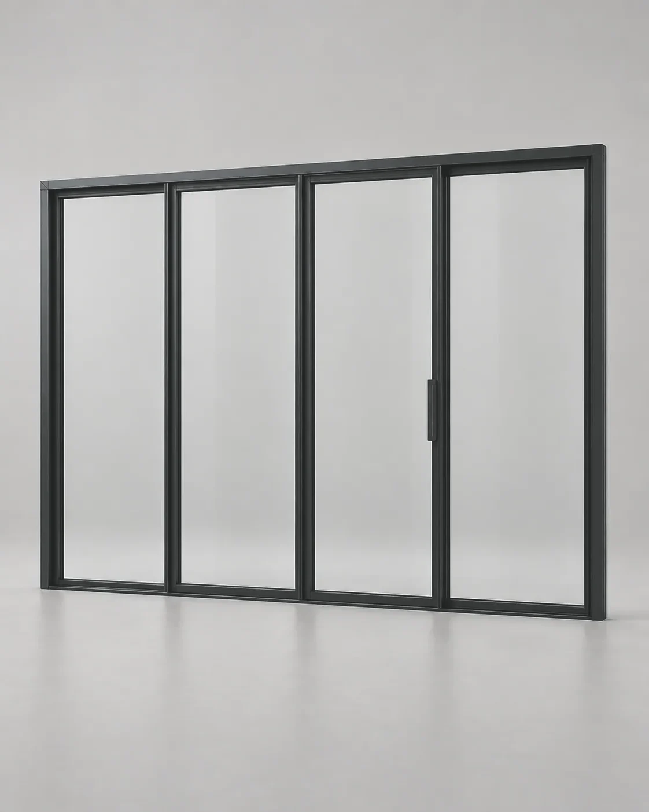

3600 × 2300 мм · 2 секции Раздвижная портальная дверь 3,6 м Проём:3,03,64,05,0 Схема:слевасправа Цвет:любой RAL 455 400 ₽за конструкциюВ корзину
5400 × 2300 мм · 3 секции Раздвижная портальная дверь 5,4 м Проём:4,55,46,0 Схема:налевонаправо Цвет:любой RAL 956 340 ₽за конструкциюВ корзину
6000 × 2300 мм · 4 секции Раздвижная портальная дверь 6,0 м Проём:4,86,07,28,0 Схема:из центра Цвет:любой RAL 759 000 ₽за конструкциюВ корзину
Скоро в продаже 2700 × 2300 мм · 3 секции Складная дверь 2,7 м Проём:2,7 Схема:влевовправо Цвет:любой RAL Скороцена — к старту продажСообщить о старте
 Скоро в продаже 3600 × 2300 мм · 4 секции Складная дверь 3,6 м Проём:3,6 Схема:3 + 11 + 3 Цвет:любой RAL Скороцена — к старту продажСообщить о старте


 Скоро в продаже
Скоро в продаже